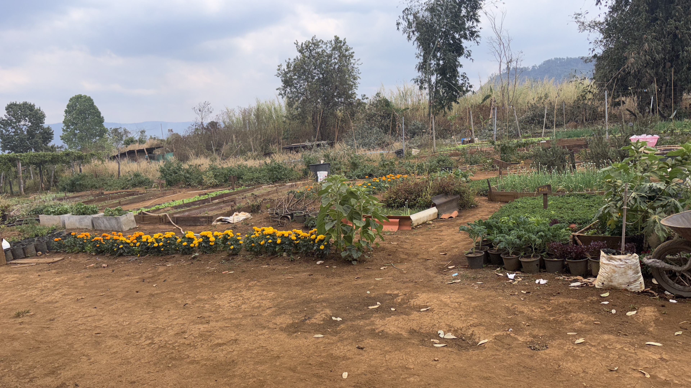
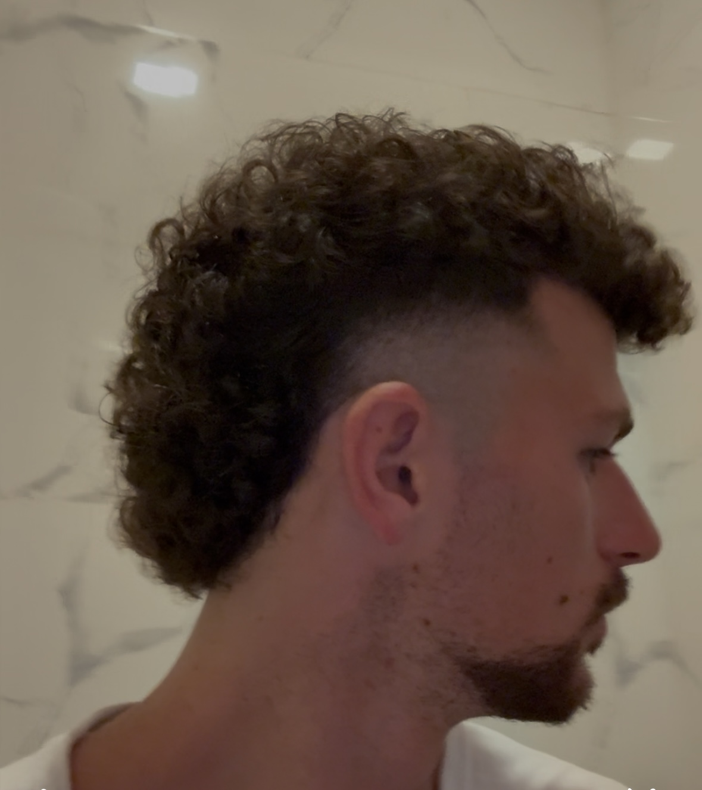
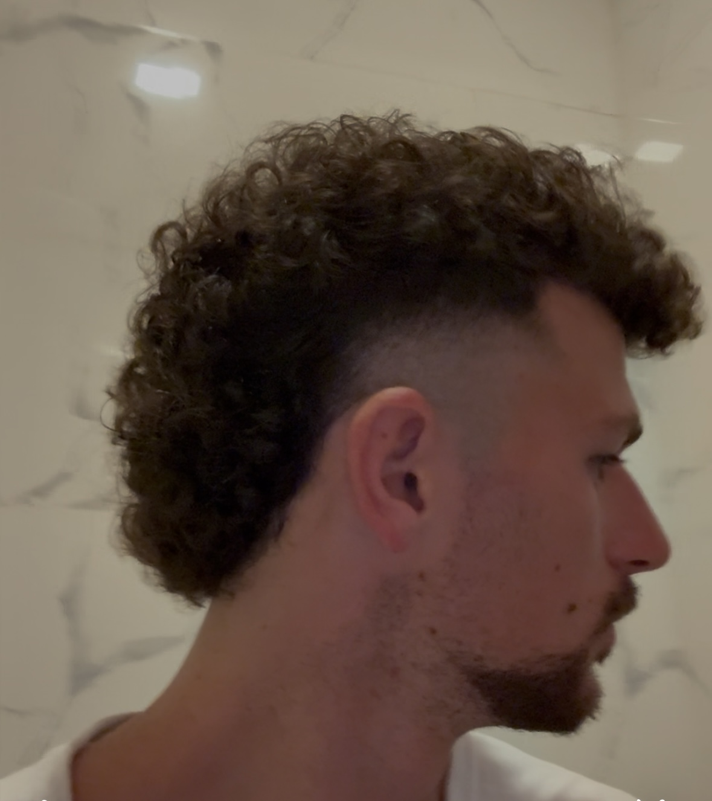

February 16th 2025, Paksong, Laos
Wow what a day. I had some great conversations and experiences today. I woke up and took the morning slow. The farm serves breakfast to all of the guests in the morning and people chat. I talked with a Polish guy who just finished his PhD in physics. He is researching nanotechnology fabrication which is what I studied a fair bit in school. It was nice talking shop and tech with him. I am still really interested in photonics, but it is so difficult to fabricate photonic devices cheaply and at scale. The electronic industry is so mature and has done amazing things to produce fantastic devices at scale. I still think photonics may be able to break into the AI interconnect space between GPUs due to low power and speed benefits. Next we talked no nonsense immigration policy of Poland. It was refreshing to hear his perspectives. Poland is super hard on immigration and does not let anyone in except they are working. There are no free social handouts like in France. Also he highlighted Poland’s reverse immigration policy, which attracts people of Polish descent back to the thriving country. This is funny he mentioned because my friend Zach just got his Polish citizenship! Poland is expected to pass England in GDP by 2030 and will have the strongest military in Europe. He estimates in the coming year they will spend about 5% of the GDP on military. I really think Poland is doing amazing things economically and politically wise and the proof is there. Immigration and free social handouts are killing Europe, making them unsafe and stagnating the economy. This conversation in the morning was great and refreshing. After that I added a nice slideshow feature to the Shared Happy Farm website. When it is complete I will add it here. It looks really professional, sleek, and nice right now, I am really happy about it. I read a good amount of my book too. I changed over to “The Three Musketeers” by Alexandre Dumas because “Devils” by Dostoevsky was too slow and boring. Dumas is great! In the afternoon Mr. Tu told me I could take the motorbike to a local waterfall. There is another volunteer here who is French woman who came with me. I do not know her name. She is doing art for the farm. The motorbike ride was one of the craziest of my life. If I was not the number one scooter driver in Gainesville, FL I surely would’ve fell. The terrain was rugged and bumpy and crazy. Anyway on the drive there the motorbike died. I could not figure out for the life of me what happened. We assumed it ran out of gas or just stopped working. To give you an idea, this is a really shitty bike. It has no mirrors, no side panels, the speed dial does not work properly, and the engine chugs like crazy. The French girl and I spent probably 45 mins in the middle of a side road on rural Laos trying to kick start this thing. We tried everything. We decided to walk the bike back up the main road and ask for help or call the Farm. We took it to a local convenience shack and filled up some gas. We were hopeful it was just a gas problem. After filling up with gas, the bike still did not start. After an hour of this we almost gave up and called the owner to pick us up. Then the owner of the local shack’s son came back and looked at the bike. He discovered on the bottom of the bike a small chord unplugged. It was the spark plug. A spark plug is a device that ignites the fuel-air mixture in an engine by sending an electric spark into the combustion chamber After plugging it back in the bike worked! We decided to still go to the waterfall even though it took so long and it was overcast. The waterfall was a super local scene, we were the only non-locals. Immediately when we arrived a group of Lao people invited us to eat and drink with them. Of course I could not resist. It was so nice and welcoming of them. We drank a couple beers, had goat with a nice spicy sauce, and laughed and took pictures together. I did a jersey swap with a guy there. I got a small Lao soccer jersey and he got a long sleeve white Faherty shirt. He said that BeerLao makes his soul happy and that they love just hanging with friends by the waterfall listening to Lao EDM mixes. It was such a wholesome scene and I am very grateful they extended a welcoming hand. I still strive to be this welcoming and kind. After staying for an hour and half about we went to find a secret waterfall. The road was so shit that I almost wiped out. As I said, I won the Gainesville Olympics for top scooter driver so I was able to navigate the shit rocky dirt roads while buzzed in the Lao countryside. This is why I quit my job obviously! I do not think you understand how terrible this dirt path was I want to emphasize this more. Everywhere was huge boulders and it was so so even and covered in dirt. It was uphill and downhill. I prevailed without falling. After a great adventure we drove back to the farm. On the way the bike gave us more problems. This time the spark plug actually popped out completely. Luckily it fell out right near we got it fixed the first time. We pulled over and the locals rushed to our aid. Even though we can’t speak to each other they were so kind and helpful. A small boy brought out some tools and was able to get the spark plug back in. While this was all happening Mr. Tu comes running out of nowhere. He drove to Pakse this morning to drop off his sister and on the way back he saw us broke down on the side of the road. We told him that the locals were very kind and helpful. We drove back on more terrible roads and the bike broke down one or two more times but we fixed it ourselves. Upon arriving back on the farm I was so tired from the fiasco I took a nap. I woke up for dinner time upon a handful new guests. I had the best conversation I have had at the farm with an Australian and Norwegian man. We talked about whether it is a big deal to squat while you poop. In Asia lots of time the toilet has no seat or is just a hole in the ground so you need to get in a yogi squat to poop. I was told I do not look American or 24 again which I have not heard in a while! I like when people comment on this I think it is a good thing. The Australian guy, Erik told me he was a snowboard instructor and does the certifications! I told him I was interested earlier in my trip in getting certified in Japan but it did not seem like it would work out. He told me I could come between June-October to get certified. I am highly considering it. The Norwegian guy Lars was very cool and funny too. I really want to visit Norway and Denmark soon. Overall it was a beautiful day with great interactions.


February 15th 2025, Paksong, Laos
Today was my first full day on the farm, here are my initial thoughts. The farm is slow, the farm is patient. Arriving yesterday afternoon I felt antsy. I’m typically good at being bored but I feel like I should be doing something. But this is how millions of people live. I expected to get to the farm and hit the ground running with many tasks. However, the farm doesn’t need to be tended every second of the day. The farm does its thing and evolves over time to produce the most exquisite output. You can’t be a farm that does everything. Master certain things. Here they specialize in passion fruit, avocado, and other simple veggies. I do not see any cows for milking which probably takes a lot of work. The beginning of any new beginning is always the most uncomfortable. I met the owner and moved some bamboo and cleared some brush, very simple tasks. I focused on being the best I could at moving bamboo, at sweeping leaves. It’s a lot more difficult to unwind than I expected. The brain doesn’t know what it wants it’s so weird. Wants two contradictory things at the same time. It says I should slow down and then it says keep going! Last night I talked with all French people. They said don’t make fun of animals online because of animal right! I found that so funny. I asked them if they are optimistic of the future of France and they laughed in my face, of course not. I asked why Europe does not have any AI companies or working on any emerging industries. The resounding answer was too much EU regulation. I am really happy the US is taking steps to not become like Europe. They are too busy protesting about what you say online about animals than building AI and tech companies. That was a hodge hodge of thoughts from yesterday evening. Today the owner of the farm, Mr Du asked me if I ever had experience with content or making a website. Funny enough I do from making this blog. He really wanted to build a website and some instagram reels so I agreed to help him out. The only reason I am on my laptop publishing this blog is because of the work I did on his website today. I expected to come to the farm as a digital detox, work the farm manually, and have no wifi at all. It should be noted this farm doubles as a guesthouse for other guests to stay overnight. At first I was disappointed not to work the farm, but then realized that I can contribute something unique and meaningful not everybody can do. Most people, even elderly men and women, can tend to the farm. Not everyone can build a working website from scratch. As much as I try to escape the strangle hold of technology and social media it always bats it eyes telling you its always here. I just have to hold myself accountable as to how much to use it. Also this farm is fully vegetarian. As you may know I eat a lot of meat but I thought it would be good to surrender to whatever they feed me here I have tried beet juice, lettuce, carrots, gooseberries, passionfruit, pumpkin, and more from their farm. I actually feel really energetic and my belly does not hurt. Finally, I was asked in the afternoon to sweep some leaves. I realized there were a few tools to do this task. At first I started with the rake. I knew it was not the most efficient but wanted to try it slowly. I ended up being suggested to use a simple broom and broom pan by a woman here. There are lots of different tools to do one job. Sometimes you pick the most efficient, sometimes not. Overall, it feels nice contributing something unique that is a specific skill not everyone can do. I could work the farm, but so can the old ladies here. I was expecting to do farm work but it is better to make a bigger impact.



February 14th 2025, Paksong, Laos
I am doing it. I am going to volunteer in the middle of rural Laos on an organic farm. I have been talking about volunteering for a while now and I am happy I finally found a nice experience to commit to. Right before committing to the volunteering this morning some tension arose. Should I keep moving? How will I get there? What if I don’t like it? I have been on the go for so long, moving to different places every couple of days. It has become against my nature to sit and stay at a place for a week or more. But, that is exactly what I need in this trip at this point. To be comfortable not on the move, not going on a crazy adventure each day, but to focus on a single task over a longer period and perfect it. This is a microcosm for life. Eventually I will want to build and work on a directed goal in career and family. I know I thrive when I put my head down and grind on one thing. Over the past few months maybe I have lost that because I have been going from one crazy experience to the next. Anyway to be able to do this volunteering experience I had to extend my visa in Laos. Thankfully my friend told me to check when my visa expired which I would have never thought of. At the border the officers did not tell me how long the visa is. I had to check on the stamp they gave me which it said it was 28 days. This morning I had to go to the immigration office and fill out a visa extension form. I needed a photocopy of my passport, a passport photo, and money to extend it. It was about 8 dollars to extend my visa for an extra week, which I think is worth it to fulfill my commitment to volunteer in this country. I found out about this farm when I rented a motorbike from a shop. I asked the owner if he knew of any volunteering experiences and he recommended me Shared Happy Farm. Online it had raving reviews of people coming for a farm stay or for food. I messaged the owner of the farm and he was so nice and personable and welcomed me. He wanted me to stay for a month or two but I told him I could only commit to 7 days right now. I also had another volunteering experience to build camping platforms in the Pakse area. What made me commit to farming was really the warmth of the host. He messaged with a voice note on whats app which made it feel like he really cared and made a connection. I realized this is really important in life and in business. When someone is deciding to pick between two equal products or experiences, making a friendly personal connection really helps give you an edge. I want to improve on putting that out there for everyone I meet. Being more friendly and personable. Anyway I am at a local bus station now waiting to take a bus to the middle of nowhere. There are no other tourists or white people. I have to tell the driver where to drop me off on the way and hopefully it works out. Here’s to a new adventure, taking it slow and into the details.
February 12th 2025, Pakse, Laos
Let me take you onto the battlefield of an Asian bus ride. It all starts with the bus station. Sometimes, you know the bus schedule; other times, you just show up and hope a bus is leaving soon. Today, I couldn’t find any information, so I went to the station at 10 AM. I asked for a ticket to Pakse and was given one for 200k kip.
I was directed to a bus and asked the driver when it was leaving. "12," he said—two hours from now. Not ideal, but not the end of the world. In the past, I’ve arrived 30 minutes early and barely snagged the last seat. There are no assigned seats, so marking your territory immediately is crucial. They pack the buses full to the brim. People will be standing or sitting on the floor—you can be sure of that. You just have to hope it’s not you.
Assuming you arrive at least an hour early and save your seat with a bag, you're in pretty good shape before the war begins. There are various types of buses. Sometimes, you get a "VIP" bus, which just means it has AC. Other times, you’re stuck on a local bus with no AC and terrible seats. Today, I got something in between—AC, but still terrible seats. I’ve found that buses leave fairly promptly, so it’s best to get on 10 minutes before departure.
Now, when the bus leaves, the battle begins. Locals are known to play audio on their phones at full volume. On my last ride, the girl next to me played a loop of someone slurping soup the entire time. My seat of choice is the left-side window so I can lean against it. I put in my noise-canceling AirPods Pro 2 and turn on some music.
Let’s go over the battalion of the bus. You have the bus driver, whose only job is to drive. He has no power. The most important person on the bus is someone I like to call the Dictator. This is the guy who decides where new passengers sit and when the bus stops. On the way, there’s always rice, produce, or even chickens that the Dictator drops off in local villages. These drop-offs can take one minute or 15, depending on whether he wants to smoke, schmooze, or do something else entirely.
Now that you understand the Dictator’s tendencies, let's talk about the most critical moment of the ride: the bathroom/snack stop. On an eight-hour journey, you’ll stop once—twice if you're lucky. The location and duration of this stop? Decided by, you guessed it, the Dictator. Sometimes, it’s just a hole on the side of the road. Other times, you might get a full convenience store.
When the break comes, veteran and strategic warriors like myself shine. This is a sink-or-swim moment. Some people take their time stretching their legs and wandering around. No. This is go time. This is what I was born for.
First, you must rush off the bus to maximize your time and survey your surroundings. I’ll take you through an example from today. Thanks to my veteran instincts, I sat at the front of the bus, ready to be the first one off. As I step into foreign terrain, I quickly scan 360 degrees. A rookie mistake is only looking forward and walking straight. To my right, I see a bathroom for 10k kip, with a line already forming. To my left, local Lao food stalls selling dried meat on a stick. And behind me, to my very pleasant surprise—the cornucopia of all bus stops: 7-Eleven.
In an instant, I perform a complex calculus calculation in my head. I realize I can’t pee and visit the cornucopia at the same time. A decision must be made. I briskly walk 200 meters across the street to 7-Eleven. You know this is an expert move because I’m the only one from the bus going. There’s a slight risk the bus leaves without me, but I’ve factored that into my equations.
Inside the cornucopia, I’m overwhelmed with choices. I must act fast—get in, get out. No time to experiment with unfamiliar snacks. I dash to the seaweed section and grab two bags of seaweed and seaweed chips—a classic. Then, I spot some good old-fashioned American corn chips. God bless the USA. Just as I’m about to leave, something catches my eye. A Slurpee machine.
I try to stay calm, but internally, fireworks explode. Throughout my entire trip in Asia, I’ve been to countless 7-Elevens but never encountered the holy Slurpee machine. I rush to get a Coke Slurpee, watching in awe as it pours smoothly into my cup. At checkout, I make a last-minute decision to grab a cheese sandwich. I keep a careful eye on the bus from afar. Total: $6. Perfect. The clerk asks if I want my sandwich heated up. I say yes, even though I know I’m pushing my luck.
They take longer than expected. From the corner of my eye, I see my bus honking and pulling out. The cheese sandwich was not in my original calculations. I abandon it without hesitation. Swiftly, I jog back to the bus to ensure I’m not left stranded in rural Laos. I climb aboard as the last person on.
Everyone who just went to the bathroom and got no snacks peers at me with a mix of disgust and admiration. I sit back in my seat, victorious. Yet, deep inside, I mourn the loss of my cheese sandwich.
The next leg of the journey is standard. The Dictator makes stops in small villages to drop off rice and packages. Some locals get on; others get off. People continue playing their phone audio out loud. I bask in my snacks, listen to music, and contemplate my mortality.
After eight hours, you’re exhausted. The sun has set. You nod at the driver and the Dictator as you wait for your bag beneath the bus. The battle is over, but the war isn’t won yet. The station is far from the city center. You still need to find a tuk-tuk to your accommodation.
This is the art of war.
February 11th 2025, Thakhek, Laos
I just returned back to Thakhek from a 4 day 3 night motorbike loop around rural Lao. It was nice to be on a bike for a couple of days, driving wherever you want. The highlights included two waterfalls where I had to scramble over some rocks, a nice viewpoint to see 65 million year old limestone formations, and waving to the local children along the way. It always brightens my day when I see the children waving and smiling, even though they live very impoverished lives. A repetitive theme of my trip seems to be enjoying living simple. Throughout the many rural, poor areas of Africa and SE Asia I have been to the people are so warm and friendly even though they lack basic material goods. As I travel the world with solely a backpack on my back it reminds me to stay simple and not overcomplicate things. On a similar note I talked to a friend the other day on FaceTime about my trip. He asked me to drop some insights and learnings from my trip. I did not have any big insights or profound ideas to share. That in itself is profound! The past 5 years I have been studying and learning to understand the depths of Truth and creation. I thought every word that needed to be spoken must be ground-shaking. But as I said, living simply and appreciating your basic life is the most profound idea of all. Now with all this being said, it is important not to live too simply. I am very grateful I was gifted with a strong body and intellectual mind. It is imperative that I use both to the best of my abilities to impact and give back to the world. The strong body part is pretty straight forward to me that I think I figured it out. It is important to stay in shape to maximize your longevity and to be energized on a daily basis. The intellectuality piece is a lot more tricky. With this growing chaotic world it is becoming ever more difficult to discern what is the best area to commit my intellectual capacities to. I am naturally gifted at math and science, and I do actually like these fields as well. When I look to the future on how to make money there has not been a clearer field than technology and AI. The mistake I made in my previous job was working for a big American corporation where your work is not valued or matters. Maybe I could see myself working at a startup for a cause I really care about. I really think that working for a big American corporation in your early 20s emasculates young men. I plan to write an essay on this to provide a real argument. Ever since quitting my job and taking my life and decisions into my own hands I feel a fire and a sense of manhood I have not felt before. When you walk into a huge corporation with your shirt tucked in and playing actor to get a raise and doing work you really don't care about it completely strips away all important masculine qualities for a young 20 year old to curate. Finally it is crazy to think I am only 4.5 months in on a possibly 12 month journey around the world. I am trying to be patient not to rush to where I am going but to enjoy the present. It is really about the journey, not the destination.


February 7th 2025, Thakhek, Laos
Woke up this morning and got a haircut in Vientiane at a really cool barbershop. I really love barbershops because it feels like you are transported back in time if the vibe is set correctly. The shop had incredible decor and nice throwback tunes. It has been fun getting haircuts in different countries along my journey. Today was a fantastic cut. Here are the rankings of the haircuts I have had 1. Georgia (refer to Georgia post for the magical haircut I had) 2. Laos 3. Dubai 4. Thailand (two haircuts both sub par). It should be noted I do not just walk into a random shop. I diligently read reviews to find the best one in the given town. This barbershop today was top tier. Anyway after my haircut I took a 6 hour bus ride down to Thakhek Tomorrow I start a four day journey through rural Lao on a motorbike exploring the stunning landscapes and authentic culture. I am very excited for the adventure that awaits. Since that is the only recap for the day I want to briefly comment on city and countryside life. I have become fascinated by urban design and even suburban design. After talking to my European friends and comparing and contrasting the places we live I noticed something really staggering. American cities and suburbs are so damn overcrowded. I saw the population and beautiful nature of the European suburbs and was stunned. I really felt the chaos of urbanization and overcrowdedness when I lived in Dallas for two years. Even in the suburbs of Tampa Bay it is too crowded. The constant noise, simulation, and go-go-go mentality creates unwanted mental pressure which can obscure your thoughts and intuition. It is clear living in nature, in tune with the cycle of life is the best. It would be great to have a farm and some animals someday. Since everything is One, picking your surroundings is essential to building your individual vessel.
 

February 5th 2025, Vang Vieng, Laos
Wow it’s so nice not seeing homeless people for 4 months. I just realized this. I thought I saw a homeless person standing limp in the street but it was just a tree! Homelessness really ruins a city, makes it unsafe, and makes it dirty. Nowhere I have been my whole trip had homeless people just in the streets. Yes there is some extreme poverty and begging but no tent cities or cracked out people. Anyway I took the speed train to the capital of Lao today, Vientiane. People have been saying bad things about this place how you only need one night or even skip it completely. I think it’s important as the international landscaper to see the capital city. There is a reason it’s the capital. I have actually really enjoyed my day and time here! There are really nice cafes and restaurants lining the streets and very nice markets across the Mekong river. I had one of the best herbal wet saunas of my life accompanied by a honey coffee body scrub. I also ate an amazing poke bowl for the first time since Israel. In USA I ate a poke bowl almost every week, it is my favorite. It is essential on longterm travels to balance out the on the go lifestyle with days to just do some chores like laundry and get new supplies at the mall. Since Lao is a 3rd world country the best place to do that is the capital city.
February 4th 2025, Vang Vieng, Laos
Life is for sharing. I have a lot of thoughts today. I want to give a recap of last evening and today but want to get to some introspection. Yesterday I did paramotoring for the first time and it was one of the coolest experiences ever. I went up high into the sky at sunset and flew over the beautiful landscape of Vang Vieng. I highly recommend it to anyone. Now today. I have been on the go ever since I started solo traveling. Recently I have had the itch to find some seclusion, volunteer, and get into a routine. Today I woke up and rented a motorbike to drive an hour to a village. I only saw one picture on instagram about it and have heard nobody talk about it here. I was excited to see what this adventure would get me into. I have been traveling with my friends I met in Thailand for about two weeks now and today was supposed to be the day I return to being solo. When I took the bike and left the city I was stopped at a toll station to get on the highway. The officer there said that it is only for cars so I had to turn around. It was okay because I rerouted to avoid tolls. I drove 1.5 hours outside of Vang Vieng before turning another checkpoint for the same highway. Again the officers said only cars around. I looked on my maps to se if there was any other way to get to this town, but there was not. I was faced with the decision to either find a new small village and see where it takes me or return back to Vang Vieng. When I started the motorbike drive this morning leaving my friend of two weeks I immediately felt something was wrong. I started to ask myself why I was forcing this seclusion idea. Yes it is true I want to get into a routine, but I also realized I really enjoy sharing experiences with others. This Is the meaning of life. Sharing your energy to others or a grand vision and giving it your all. Yes solo backpacking is cool and you really have so much time to introspect and iron out your ego. However, when it comes to creating experiences it is best shared with others. That being said I still am going to find some seclusive introspective time when the time is right, but it is not something that needs to be forced. For personal growth obviously being alone is key, but for experiencing life sharing is the way to go. That is a feature of nature and creation because making a family and babies is the only way the human race perpetuates. After I got back to Vang Vieng from my two hour motorbike ride I needed to workout hard. I did pushups, sit-ups and Bulgarian split squats. I have been working out and getting into great shape on this trip but I think I can give even more. I really want to fix my hip pain and I am not putting in enough work to do so. After my workout I found a place to train Muay Thai. I had a 1-1 session with a pro Peruvian Muay Thai fighter. He worked me hard and it was so technical. From the angle of your steps before a kick to how far your elbow should be when you throw an elbow. What I know for sure is all your power is generated in your hips. You need to throw your entire being into a kick or a punch. He commented how I was stiff in my shoulders and I need to relax. This is sadly a genetic predisposition of mine. It was nice to train Muay Thai again for the first time in Lao. I learned a lot today from my bike extravaganza and I am excited to see how I will curate the rest of my trip.


February 3rd 2025, Vang Vieng, Laos
I am writing this Monday morning at 8 AM. I have been waking up early ever since the 3 day trek in. Nong Khiaw which I have liked. Yesterday was a great day and one of my favorites of the trip so far. Anton Rachel and I rented bicycles and rove around the whole town of Vang Xiang. Vang Vieng is a nice backpacker village with a river and tons of limestone carts surrounding the town. I have not rode a bicycle in a really long time so it was a great idea. Vang Vieng is known for multiple blue lagoons where you can chill, swim, and jump off rope swings. We biked about an hour to one of the many blue lagoons. The roads here are covered in potholes and not paved at all so it was pretty difficult to bike. I had a city bike with only one gear which made it difficult. At the blue lagoon I led a yoga session for my friends and ate some corn before going for a swim. I did not know the exact definition of a lagoon so here it is: a shallow body of water separated from a larger body of water by a barrier. The lagoons in Vang Vieng are fed by underground springs and streams. After going to the first lagoon we biked to lunch before headed to another lagoon. The next lagoon we went to had more rope swings and jumps. I did a rope swing and tried to do a back flip off of it but landed on my face. I am not a flipper. I was pretty tired from biking all day but the nice lagoon water woke me up. After a full day we biked during sunset almost two hours. The landscapes were so stunning and beautiful. We saw children laughing and playing. Hot air balloons and paramotors filled the skies. Today I am going to do paramotoring at sunset which I am so excited about. I have been moving city to city pretty quickly for about a month. I am looking forward to finding a place to get into a nice routine for a little. From Nong Khiaw a couple days ago I took the beautiful Lao China railway. I want to share some thoughts about the China-Lao relationship, the recent world economic forum, cardinal vs celestial north, and some more. Oh also I met a really cool and nice guy in my hostel dorm yesterday, Ofri from a north kibbutz of Israel. We talked about life and scaling wealth. He was so genuine and full of love. It was such a great conversation and connection.